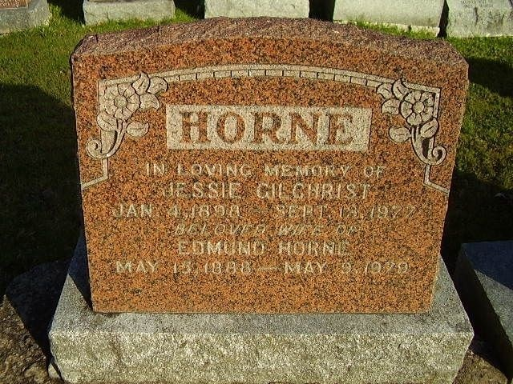

Edmund Horne 1888 - 1979
[ Home ] | [ Calendar ] | [ Surnames Index ] | [ Census Index ] | [ Family History ]The youngest of 3 children of Charles Horn (a waggoner on a farm) and Jane Tutt (a laundress), Edmund Horne, the great-uncle of Nigel Horne, was born in Margate, Kent, England on May 15, 18881,2,3,4,5,6. He was married twice - to Adeline Kewley (on Jun 4, 1913 in Montreal, Quebec, Canada) Jessie Gilchrist7.
During his life, he was living at Drapers Cottage in Margate on Apr 5, 18918; at 15 Haine Cottages, St Lawrence, Thanet, Kent, England on Mar 31, 19019; in St Antoine, Quebec in 19113; and in Saint-Hubert, Longueuil, Quebec on Jun 1, 19214. In 1907 he traveled from Glasgow, Scotland to Halifax, Nova Scotia, Canada, arriving on 23 Apr.
He died on May 9, 1979 in Lachine, Quebec, Canada (the Gazette: "HORNE, Edmund. Suddenly on Wednesday, May 9, 1979. Edmund Home beloved husband of the late Jessie Gilchrist. Visitation at Clarke MacGillivray White Funeral Directors, 1718 St. Joseph Blvd., Lachine, on Thursday from 7 to 9 p.m. Funeral service in the Chapel, on Friday, at 10 p.m. Interment Lakeview Cemetery.") and was buried at Les Jardins Commémoratifs Lakeview Memorial Gardens, Quebec after May 9, 1979.
Parents
- Charles was born on Jul 28, 1852
- Jane was born on May 12, 1849
Citations
- 1891 England Census Online publication - Provo, UT, USA: The Generations Network, Inc., 2005.Original data - Census Returns of England and Wales, 1891. Kew, Surrey, England: The National Archives of the UK (TNA): Public Record Office (PRO), 1891. Data imaged from The National
- 1901 England Census Online publication - Provo, UT, USA: The Generations Network, Inc., 2005.Original data - Census Returns of England and Wales, 1901. Kew, Surrey, England: The National Archives of the UK (TNA): Public Record Office (PRO), 1901. Data imaged from the National
- 1911 Census of Canada Online publication - Provo, UT, USA: Ancestry.com Operations Inc, 2006. .Original data - Library and Archives Canada. Census of Canada, 1911. Ottawa, Ontario, Canada: Library and Archives Canada, 2007. http://www.collectionscanada.gc.ca/databases/census-19
- 1921 Census of Canada Ancestry.com Operations Inc (Marital Status: Married; Relation to Head of House: Head)
- Canadian Passenger Lists, 1865-1935 Online publication - Provo, UT, USA: Ancestry.com Operations Inc, 2010. .Original data - Passenger Lists, 1865–1935. Microfilm Publications T-479 to T-520, T-4689 to T-4874, T-14700 to T-14939, C-4511 to C-4542. Library and Archives Canada,n.d. RG 76-C. D
- England & Wales, FreeBMD Birth Index, 1837-1915 Online publication - Provo, UT, USA: The Generations Network, Inc., 2006.Original data - General Register Office. England and Wales Civil Registration Indexes. London, England: General Register Office. © Crown copyright. Published by permission of the Cont
- Quebec Vital and Church Records (Drouin Collection), 1621-1967 Online publication - Provo, UT, USA: Ancestry.com Operations Inc, 2008.Original data - Gabriel Drouin, comp. Drouin Collection. Montreal, Quebec, Canada: Institut Généalogique Drouin.Original data: Gabriel Drouin, comp. Drouin Collection. Montreal, Quebec,
- 1891 England, Wales & Scotland Census - Findmypast (was age 2 and the son of the head of the household)
- 1901 England, Wales & Scotland Census - Findmypast (was age 12 and the son of the head of the household)
Media
Edmund Horne - Jessie Gilchrist - headstone

1901 England, Wales & Scotland Census Transcription - GBC-1901-0007467101
Family Tree

Generated by ged2site. Last updated on Jun 11, 2024